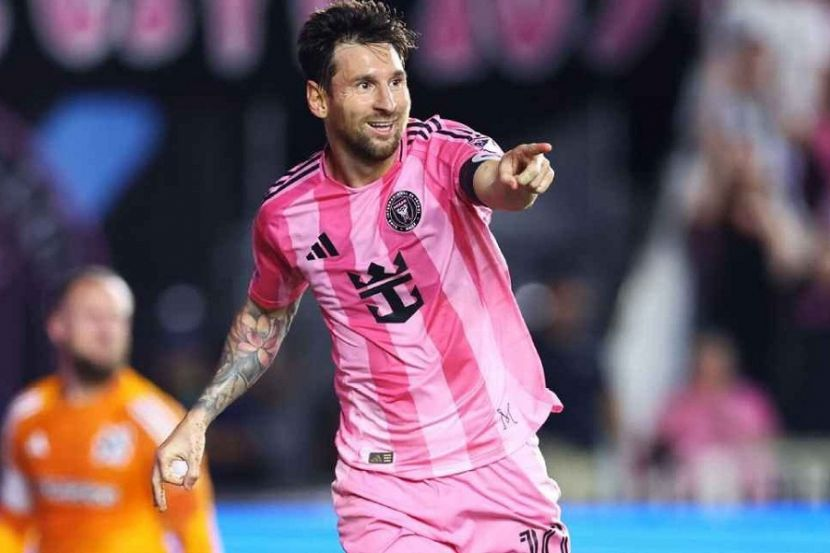

A Tribute to Lionel Messi
The Greatest of All Time

About Lionel Messi
Lionel Andrés "Leo" Messi (born 1987) is an Argentine professional footballer who plays as a forward for and captains both Major League Soccer club Inter Miami and the Argentina national team. Widely regarded as the greatest player of all time, Messi has won a record eight Ballon d'Or awards and six European Golden Shoes.
Key Achievements
- Won the 2022 FIFA World Cup with Argentina.
- Won the Champions League four times with FC Barcelona.
- Holds the record for most Ballon d'Or awards (8).
- All-time top scorer for both Barcelona and the Argentina national team.
Notable Contributions
- Record for most goals in a calendar year (91 goals in 2012).
- Over 800 career goals for club and country.
- Won a total of 44 trophies, making him the most decorated footballer in history.
Learn More on Wikipedia